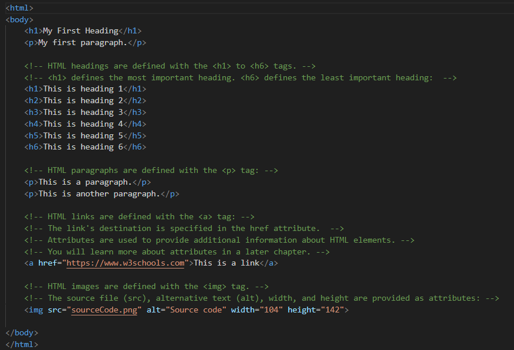

HTML links are defined with the a tag. The link address is specified in the href attribute:
Visit W3SchoolsHTML images are defined with the img tag, and the filename of the image source is specified in the src attribute:
If we try to display an image that does not exist, the value of the alt attribute will be displayed instead.

The style attribute is used to add styles to an element, such as color:
This is a red paragraph.
Mouse over this paragraph, to display the title attribute as a tooltip.